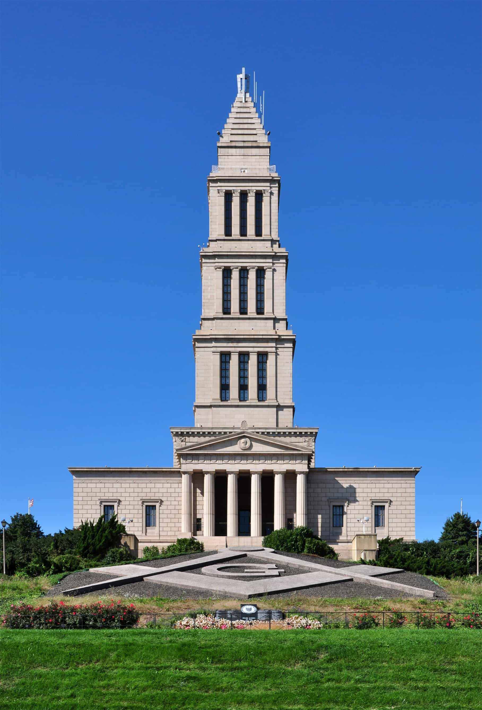

Albert is a Third Degree Master Mason and a Traveling Man who can usually be found somewhere in the great expanse that is currently known as the United States of America.


I wear a ring. It belonged to a Mason who probably lived many generations ago and, as I purchased it from a vintage jewelry store, I do not know his identity. It is a simple ring, constructed of steel, bearing just the Square and Compass an emblem that is commonly associated with our Fraternity, and would cost around $40 to buy an almost identical copy, online today. At least once a week a man will notice this ring and ask me questions about my Masonic affiliation. The purpose of this article is to answer some of those unasked questions men might have about Freemasonry.
A few months ago, I was sitting at a diner counter eating breakfast. The waiter was lingering around my location and I caught him casting a few glimpses at my ring. Finally he got the courage to blurt out his question. The man sheepishly said, “My Dad is a Mason but he will never tell me what it means to be one. I want to join the Lodge but want to have some side idea of what that means. What does it mean to you?”
My response was, “That is a complex question, but the basic operational answer is that I am a member of an International Fraternity that is primarily a social club but also engages in community and charitable outreach. There are also many opportunities to engage in self-improvement which is the heart of Freemasonry. Your Dad is largely correct though when he says you have to join to find out the meaning of Masonry because the ultimate meaning is personal and varies Mason to Mason.”
Does that sound purposefully mysterious for the sole purpose to incite intrigue? Given the nature of Masonry, sure, that is to be suspected. But it is the truth.
The most frequently asked question I get from my fellow man are about the qualifications to join the Lodge. There is a lot of “disinformation” out there on this subject. Some men think they must treat even inquiring into my membership status as if we are talking about the battle plans to invade a foreign country.
Once I had a stranger request to speak with me in the alley behind a bar because he was uncomfortable about bring up the subject as “someone might overhear” if we talked about it in an open room as if that could be a matter of life or death. (The man was sincere in this belief as someone previously had told him if two or more Masons heard anyone bring up the subject of membership in the same room then that man’s name was placed on a blacklist).
To clear the air, here are the real qualifications. These regulations vary by Grand Lodge, which in America is on a state by state basis (rules that apply in California may not be applicable in Florida, for instance). But, in general, you must:
That is it. If you do petition a Lodge for membership they will let you know any if there are more specific minor requirements. Also, once you become a Mason there are nominal annual dues which vary greatly across the country, as they are set by local Lodges, but the norm is between $100 and $200 a year.
The whole nonsense of having to be directly related to a Mason or one must save the life of a Mason may have used to be a membership requirement centuries ago. If they were ever true, those requirements have been long dead. The way I started my membership process was by simply asking a man who I knew was a Mason about the organization.
If you don’t know a Mason look up the Grand Lodge in your state and contact it. The Grand Secretary will put you in touch with a local Lodge that will assist you starting the membership process.
Yes you read that correctly. A woman cannot become a Mason. It is a male-only Fraternity and has been since its origination.
If there is a woman in your life who is interested in the concepts generally taught by Freemasonry she will have to petition a Masonic body such as the Order of the Eastern Stars that accepts women as members.
There are active Masonic Lodges throughout the world, in just about every country and continent. But, Masonry in the United States is distinctly different then that found in other countries, especially Europe. Here in the States, it is mainly a social club promoting self-improvement of men and conducting charitable outreach. There is no political agenda. In fact discussion of politics is actively discouraged. However, in Europe and other parts of the world Masons do have real political agendas and act just like a political party. This is simply not true in America though. The local Lodge on Main Street is spending most of its energy planning the next pancake breakfast and not running the town council.
For a real word recent example, there has been a Masonic backlash in France as it is rumored that Emmanuel Marcon, the new Prime Minister, is a puppet of one of the French Grand Lodges which is using him to push their agenda. I have even read of reports of violence against Freemasons motivated because of their political activities.
I do not know how deep this animosity actually runs outside of the United States, but a Brother of mine, who engages in frequent international business travel, has a personal policy against bringing any Masonic regalia with him on trips to certain countries because it might make him a target. Bluster? Who knows. The point is that if you join a Lodge in the United States your experience is going to be much different than that of a foreign country and it is not going to involve political conspiracy.
I have traveled extensively throughout the World and encountered Masons in just about every country and those interactions have been extremely positive. In some countries, especially those of former communist origins, Freemasonry is a considered to be a rouge organization, usually not actively suppressed by the government these days, but certainly not encouraged. Even given this though members their will reveal themselves to me and engage on a Brotherly level.
Once, I was in Russia and noticed one of the business contacts at our meeting was a Mason. At dinner that night most of our one-on-one conversation was about him giving me warnings on how the government will blacklist Masons, break up Lodge meetings, and seek them out for political arrests. His Lodge would not meet in the same location twice and I was warned to not disclose my affiliation. He still paid the check though and insisted I put one more vodka on top of what was otherwise a fine meal before we parted ways.
On the flip side, in many other countries, the practice of Freemasonry is openly endorsed. In England, I had a fellow Mason, on recommendation of the Master of a local Lodge, put me up for a few days when I had an emergency. Similarly, a local Lodge in Germany provided me with some cash assistance when my wallet was stolen.
Joining the Fraternity outside of the United States, might have different meanings that will vary country-by-country, but in most ways you are still part of an International Brotherhood and your membership will be positively recognized wherever your travels take you by most Brothers.
When I get this question, all I can say is you have to join to understand why it is worth your time. Personally, I am a busy man with limited time but I find the experience fulfilling enough to maintain active membership. It is a net benefit in my life. Largely, what you get out of being a Mason is what you put into it though and, considering the dwindling ranks of the Fraternity, those opportunities are just become more plentiful with less competition as the years pass by.
Many of these Grand Lodges and local Lodges sit on large endowments and bank accounts which will be used to subsidize self-improvement opportunities for members. I have taken advantage of some of these at little to no cost. Had I paid for it out of pocket, attending some of the courses or conferences would have cost me thousands of dollars.

The greatest secret about Masonry is that there are not that many secrets. There are certain signs, grips, and ritual work which Brothers swear to keep confidential, but all of these can be found on the internet today. In fact, you can find this information open to the public in Masonic collections at local, regional, and college libraries.
The way I learned most of what I know about Freemasonry before joining was by reading an excellent book entitled Freemasons for Dummies. I would highly recommend the read if you are interested in joining or in the process of doing so.
I highly doubt Masonry in America is involved in anything corrupt. Perhaps in Europe or in other International Masonic bodies there is more to the whole “conspiracy theory” aspect of it, but here in America that is not the case. As one Brother of my Lodge likes to say, “I doubt we could put together a wood shed in an afternoon let alone run the world.” He is right. Getting everyone to the same location for dinner requires as much logistical work as it did to invade France in WWII on D-Day. Simply put, Freemasons in the United States are not running a secret shadow government.
If you would like to join a community based organization that is exclusively male, performs charitable acts, and meets in a dimly lit building which are only occupied a few times a month, then think about joining the Lodge. Doing so will give you many opportunities for self-improvement and in this modern age is one of the last places where a man can engage in fraternity exclusively with his fellow man.
If you have any further questions about Masonry please feel free to place them in the comment section. I will attempt to answer to the best of my knowledge (without giving away any of our “secrets” of course).
Read More: Who Are The Knights Templars & Freemasons?